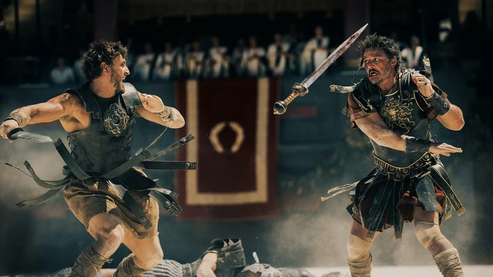
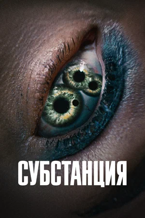
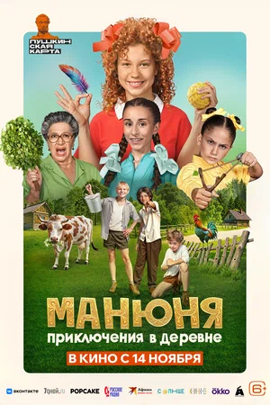
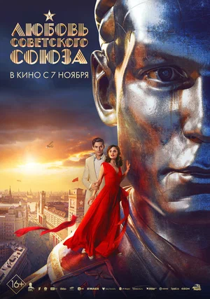

«Гладиатор 2»
В мировой прокат наконец выходит блокбастер Ридли Скотта — без Рассела Кроу, но с его наследниками, эпическими сражениями, боевыми и ручными обезьянами, отрубленными конечностями и непревзойденным Дензелом Вашингтоном. Из Колизея — Станислав Зельвенский.
Подробнее
Субстанция (2024)
Слава голливудской звезды Элизабет Спаркл осталась в прошлом, хотя она всё ещё ведёт фитнес-шоу на телевидении. Когда её передачу собираются перезапустить с ведущей помоложе, от отчаяния Элизабет решает принять инновационный препарат, создатели которого обещают невероятное преображение, но при соблюдении правила одной недели. Так на свет появляется молодая красотка Сью. Девушка начинает делать карьеру в шоу-бизнесе и вскоре решает, что семи дней ей маловато.
Подробнее
Манюня: Приключения в деревне
Манюня, Наринэ и Каринка в сопровождении Ба отправляются на летние каникулы в настоящую русскую деревню к бабушке Насте. Сначала они очень увлечены непривычной атмосферой нового места, но достаточно быстро начинают скучать. Решив ускорить время до отъезда домой, девочки по наводке местных мальчишек обращаются к бабке-колдунье, которая якобы исполняет любые желания. Она соглашается помочь, но ставит свои условия. Исполняя поручения колдуньи, девочки попадают в удивительные приключения, напоминающие сюжеты русских народных сказок.
Подробнее
Любовь Советского Союза
История о поколении смелых и красивых, не заставших разрушений революции и хаоса гражданской войны, мечтавших построить новую жизнь, в которой не будет места смерти, а только невероятной любви, открывающей им путь к великим достижениям и открытиям. О подвигах и славе, предательстве и верности тех, кто был героями в небе и на земле, о времени безмерных испытаний, которые выпали на их недолгие, но яркие жизни. О женщине, которая была мечтой и настоящей любовью Советского Союза.
ПодробнееКраткая информация
Пол Мескал
Место рождения: Мейнут, Ирландия
Жанры: драма, триллер, мелодрама.
Личная жизнь: ...
Деми Мур
Место рождения: Розуэлл, Нью-Мексико, США
Жанры: драма, комедия, мелодрама
Личная жизнь: Выросла в «неблагополучной» семье, мать с отчимом были алкоголиками, часто
меняли место жительства.
В 16 лет бросила школу, чтобы работать в модельном агентстве. По наущению соседки,
молодой актрисы Настасьи Кински, тоже решила сниматься в кино.
Екатерина Темнова
Место рождения:Москва, Россия
Жанры: комедия, приключения, детектив
Личная жизнь: ...
Ангелина Стречина
Место рождения:Стрежевой, Россия
Жанры: драма, мелодрама, комедия
Личная жизнь: Окончила балетную школу.
Окончила музыкальную школу по классу фортепиано.
Окончила ВТУ им. Щепкина.